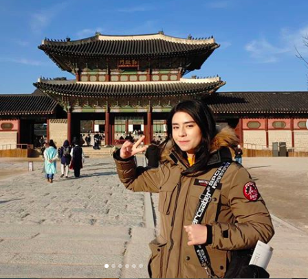

Hello! My name is Wynn. I am from South Kingstown, Rhode Island, and I'm a senior at URI.
I study anthropology and history, and I hope to go to grad school for archaeology and become an archaeologist.
I hope that learning to program will help me learn to create and navigate databases that can be used
for research in archaeology.
My hobbies include fencing and volunteering as an EMT.
I also like to travel, last year I want abroad for a semester in Hong Kong.
I also visited China and Korea while I was in Asia.
This summer want to read a lot and to teach myself to paint.
I currently have no pets, but I used to have a bunny rabbit who was very cute.
|  |
| |
|---|---|---|
| Fencing in a tournament | Visiting Gyeongbokgung Palace in South Korea | I also enjoy watching anime! Here is a photo I made while in quarentine. |